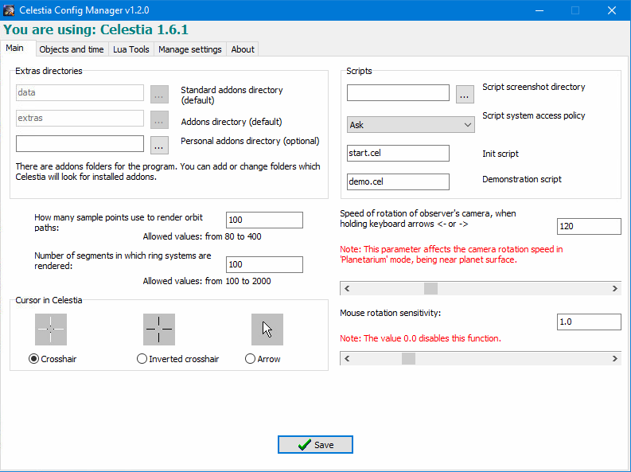
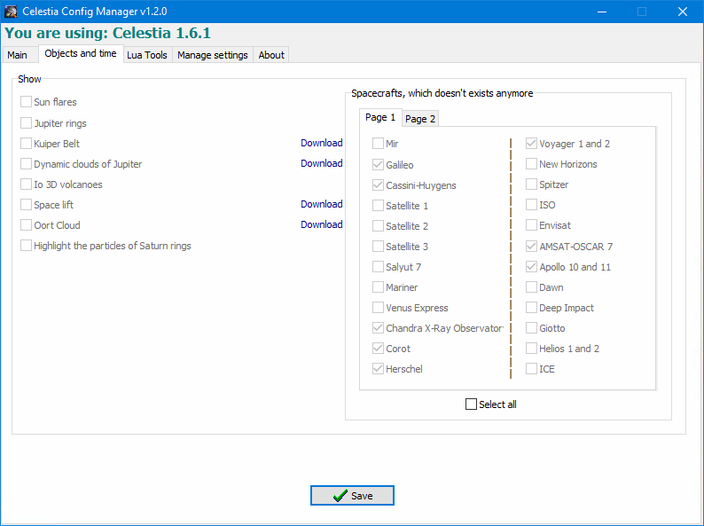
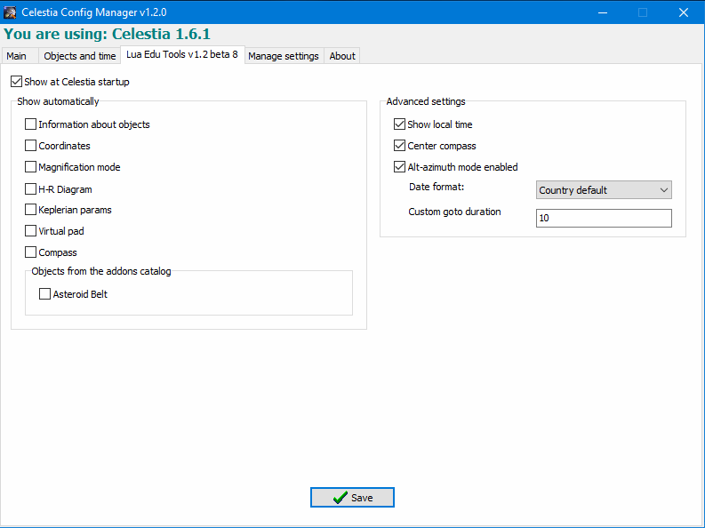

Main Tab

The main tab allows the editing of all the settings of the celestia.cfg file. The user does not need to open the file manually to learn the syntax and to read the description of all the parameters. You can easily change the add-ons folders, configure scripts, render orbit parameters, rotate the camera and much more.
Objects and Time

This tab allows you to edit or disable some add-ons that may not always be necessary or may load the system. This will save you from having to remove and re-download these add-ons. Also you can optionally enable and disable the real-time display of spacecraft which have ceased to exist (for example, "Mir" station or "Galileo").
Lua Tools

This tab allows you to manage the settings of Lua-tools, such as Lua Edu Tools and Lua Universal Tools. The user does not need to open config.lua file manually to learn the syntax and to read the description of all the parameters. You can choose which toolbars display by default, enable/disable add-ons, and edit advanced settings.
Celestia Config Manager can export and import settings, as well as restore the default settings.